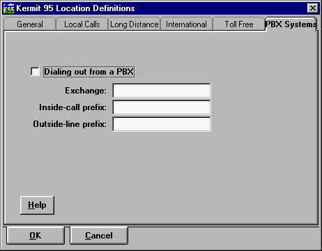

K95 Dialer - The Location Definitions Notebook
Please refer to Using C-Kermit, Chapter 5, for a thorough
explanation of Dialing locations and procedures.
The General Page
The current location is shown highlighted in the Location box. Change
locations by using the dropdown list (click on the arrow, then click on the
desired location). This is equivalent to using the Current option
in the Locations menu.
- To remove an entry . . .
- Highlight the entry you want to remove in the
Location field, then click on Remove.
- To add a new entry . . .
- Click Add. A box pops up in which you enter the
name for the new entry:
Enter the name, click on OK, then fill in the
information on the various notebook pages.
On the remainder of the General page, enter the information for the location
you are dialing from: country code, area code, and so on, and specify the
dialing method (tone or pulse), as shown in the screen shot above:
- Country code
- The numeric country code of the country you are dialing from, for example 1
for the USA and Canada (etc). These are listed in Table VIII-1 of Using
C-Kermit.
- Area code
- The area or city code, if any, of the place you are dialing from within
your country, for example 212 for Manhattan, New York City.
- Prefix
- Any prefix which must always be used when dialing from this
location (normally left blank, but might be used for call-waiting override).
- Suffix
- Any suffix which must always be used when dialing from this
location (normally left blank).
- Maximum redials
- The maximum number of times to automatically redial the number if it
is busy. NOTE: Automatic redialing is prohibited by law in some
countries, and the maximum number of redials might be restricted in others.
Be careful not to violate local laws.
- Redial interval
- How many seconds to wait between automatic redial attempts. The minimum
interval between automatic redial attempts might be specified by local law.
- Timeout
- The number of seconds to wait for a call to be answered before declaring
the call to be a failure.
- Dialing method
- Check Tone or Pulse, as appropriate. If you don't know, check Pulse.
- Ignore Dial Tone
- Check this box if your phone does not produce a dialtone recognized by
your modem.
The Local Calls Page
Enter any Prefix or Suffix needed for local dialing. Normally,
no prefix or suffix is needed, in which case you should leave these boxes
blank.
The Area Codes box is for listing all the area codes to which calls
from this location are local (meaning that the long-distance prefix is not
used), but which must be dialed. In the North American dialing region, this
is where you handle "ten digit dialing". Do not include your own area code in
this list unless you must dial it (as is the case, for example, in the US
state of Maryland). The format for this box is zero, one, or more area codes
separated by spaces (not commas). An area code may also include an "exchange"
in cases where it makes a difference.
The Force Long Distance box should be checked when local calls (that
is, calls to your own area code, or to any of the other area codes listed in
the Area Codes box on this page) must be dialed with the long-distance prefix.
This is the case, for example, in France.
Hint: In most cases, this page can be left blank.
The Long Distance Calls Page
Here you simply fill in the long-distance dialing prefix -- the digit or
digits you dial before dialing a long distance call. This can be a simple
prefix like "1" in the USA or Canada (etc) or "0" in Germany or England (etc),
or it might be an access code to a particular long-distance carrier (such as
1010-ATT translated to digits). It might even be an entire telephone number
that you call in order reach your long-distance carrier (such as 1800CALLATT,
translated to digits).
The long-distance suffix is normally left blank, but might be a calling-card
number. If you need to enter a calling card number after the phone number,
enter it as the long-distance suffix each time you use it, and then erase it
before exiting from the Dialer. If you don't erase it, anybody will be able
to walk up to your PC and find out what it is.
The International Calls Page
International dialing prefix, such as 011 in North America, or the access code
for your international carrier. The suffix, if any, would typically be a
calling card number.
The Toll-Free Calls Page
Here you list the area codes to which calls are toll-free, such as 800,
888, 877 (and soon 866) in North America, as well as the prefix for toll-free
calls, such as 1 in North America. If you use the default long distance
carrier, this is the same as your long-distance prefix, but if you use a
special access code for long-distance toll calls, it might be different.
The PBX Systems Page

This is for locations served by a Private Branch Exchange (PBX), such as
a big company or university, where there is a difference between inside
and outside numbers. Usually inside numbers are dialed in a special short
form, whereas outside numbers require an "outside line prefix".
PBX dialing is explained in detail in Chapter 5 of Using
C-Kermit, pages 107-108.
- Dialing from a PBX
- Check this box if you are dialing out from a PBX (also known as PABX).
- Exchange
- Enter the first several (usually three) digits of your local phone number,
as seen from outside the PBX; the leading digits that all phone numbers on the
same PBX have in common. If K-95 recognizes a phone number as being in the
same country, same area code, and having the same exchange as your PBX
exchange, then K-95 knows it's an internal call, and removes the exchange
digits before dialing. For example, if your PBX exchage is "876", then
"8765432" becomes "5432" when making an internal call.
- Inside-call prefix
- The digit or digits you must dial to indicate that you are making an
inside call, i.e. a call from one PBX extension to another.
- Outside-line prefix
- This is the prefix you must dial to get an outside line when using your
PBX, i.e. to reach the public telephone system.
Exporting Location Definitions
In the Dialer's main File menu, choose "Generate location script". This
creates a file called LOCATION.KSC in Kermit 95's SCRIPTS
subdirectory. The LOCATION.KSC file contains macro definitions for
all your locations. The name of each macro is "location-xxx", where xxx is
the name of the location. To load these definitions into Kermit 95, type
TAKE LOCATION.KSC. Then to execute any of these macros from the
K-95> prompt, just type its name, e.g. "location-myoffice".
The LOCATION.KSC file is portable and may be used with other
C-Kermit implementations.
Click Back on your Browser's Toolbar to return.